| 志賀高原-草津 スキーツアー |
| 志賀高原から草津へのスキーツアー、いわゆる「横手越え」は、スキーツアー大好き人間を自称する私にとって、「え！
まだ行ったことがないの？」と言われるのが恐ろしい、いわば私の弱みだった。 幸運にも、８００名の会員を有するクラシック スキー クラブの行事の１つとして、（財）自然公園美化管理財団 草津支部 の山田武平氏にガイドをして頂き、２泊３日の春スキーを楽しむことができた。 ２００２年３月２２日〜２４日 |
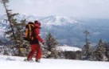 |
| 横手山-熊の湯-木戸池-スキーツアー |
| １日目は横手山スキー場で自主トレ。 ２日目はツアーの足慣らしとして、横手山-熊の湯-木戸池へ出かけた。 一行は７８歳をトップに熟年男女２２名とガイドの山田氏。 テレマークスキー２名、山スキー３名の他はアルペンスキー。 ツアー初体験の人も幾人かいる。 |
| 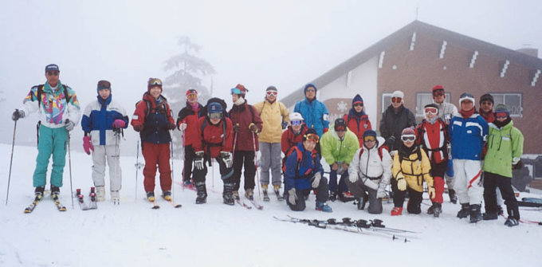 |
| 生憎のガスの中で渋峠ホテルを出発 （今までの渋峠ヒュッテが改称） |
| 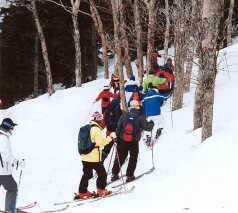 | 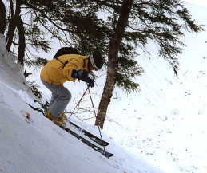 | 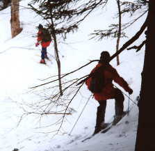 | ||
| ゲレンデから林の中へ | 崖を落下するように滑る | 雪に埋まった沢を渡る |
| 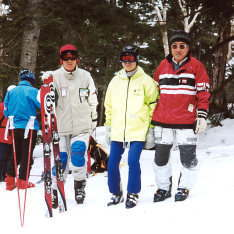 | 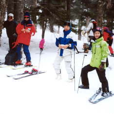 | 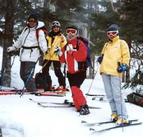 | ||
| 安全なところまで来てホット一息 | ||||
| 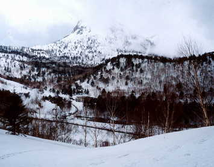 | 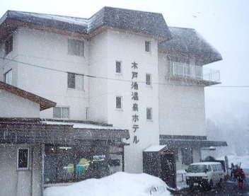 | |
| 晴れ、曇り、雪、とめまぐるしく変わる天気に、志賀高原の名物笠岳が見えたのは一瞬だけ。 | 目的地の木戸池スキー場に着いたときは吹雪、暖かいホテルで昼食。 この後自由行動となり、めいめい熊の湯、横手山で滑る。 |
| 渋峠-草津 スキーツアー |
| ３日目は待望の横手越え。 天候を心配したが、夜の間に１０ｃｍの粉雪が積もり、当日は快晴に恵まれた。 |
| 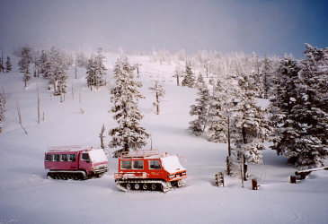 | 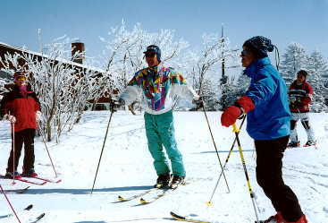 | |
| ホテルの窓から見た横手山の朝焼け 山頂のアンテナ群はここからは見えない |
出発前にガイドの説明を聞く |
| 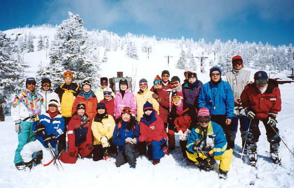 |
| 熟年パワー２３人勢ぞろい |
| 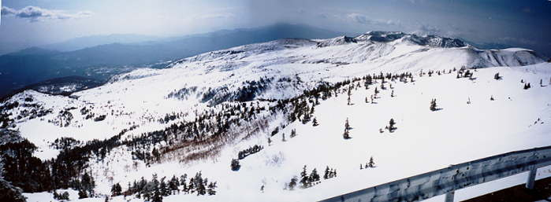 |
| 渋峠から２０分のところにある展望台から、白根山、浅間山、草津の町、これから滑る芳ケ平などが一望できる。 （パソコンによる合成パノラマ） |
| 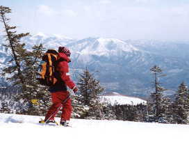 | 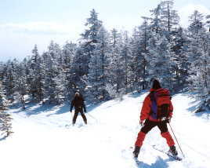 | 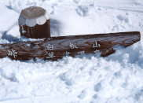 |
| この時期としては思いがけない粉雪を滑る。 渋峠-白根山・草津温泉の道標は雪の中 |
| 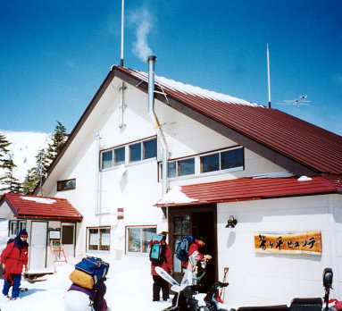 | 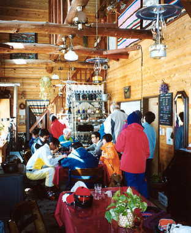 | |
| 芳ケ平ヒュッテで一休み | ムード溢れるヒュッテの内部 |
| 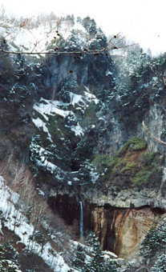 | 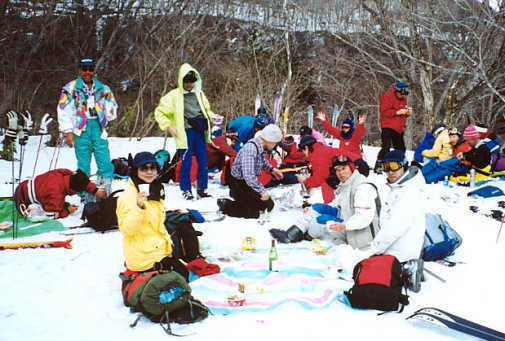 | |
| 日本の滝百選にも選ばれた 常布の滝（落差７０ｍ） |
滝を見ながら、ワインとチーズとラーメンで野外パーティ |
| 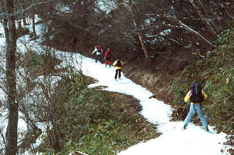 | 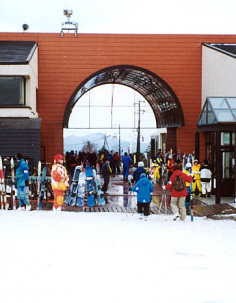 |
| 陽だまりの登山道の雪が乏しくなるころに、ツアーのゴール草津スキー場の天狗ゲレンデに着く |
| 全員怪我もなく、２泊３日のスキーツアーを楽しむことができた。 ガイドの山田さん有難うございました。 |
|
|
| ホームページの中で検索したい |
|
ホームページの中で道に迷ったら |
|